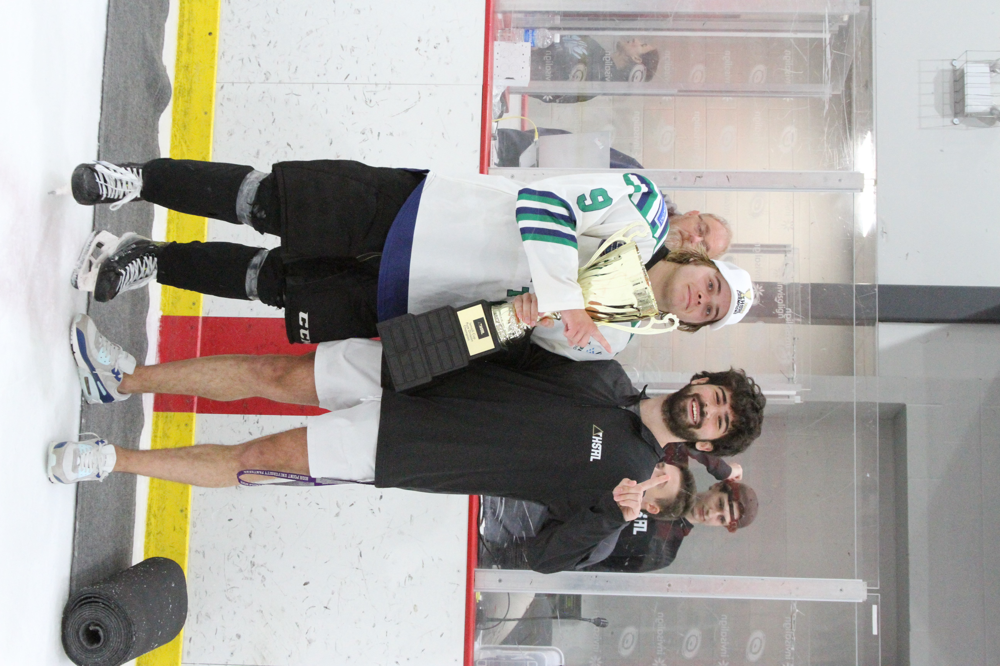

I am a Computer Science student at High Point University specializing in software engineering, cybersecurity, and innovation. I love solving complex problems and building technology that improves how people live and work.
A major part of my experience is founding the Triangle High School Hockey League. What started as an idea has grown into a multi-team organization built with community support and local sponsorships.
My goal is to combine technical mastery with leadership to build meaningful products and successful teams that make a real impact.
Beyond technology, I'm passionate about hockey, community engagement, creative problem solving, and exploring new ideas in business and tech. I enjoy collaborating with others who are driven and curious.